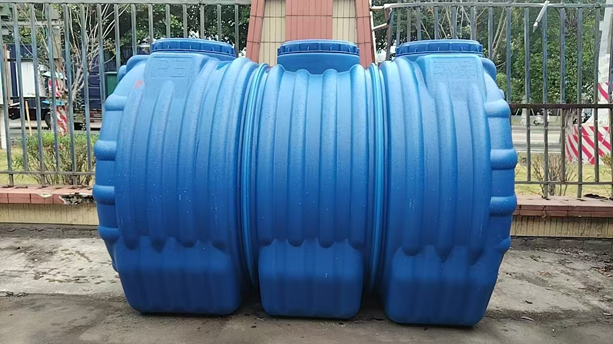

固威环保广州市固威环保科技开发有限公司
固威环保广州市固威环保科技开发有限公司
污水处理厂解决方案
规模匹配 · 提标改造 · 运行稳定性
规模匹配 · 提标改造 · 运行稳定性
分散站点 · 低温运行 · 尾水利用
高有机负荷 · 油脂分离 · 生产波动
分类收集 · 消毒控制 · 污泥管理
纳管条件 · 分类处理 · 改造衔接
设备选型 · 泵房布置 · 图纸配合
汛期工况 · 泵组冗余 · 远程运维
 01
01铝合金外壳、铜排导体，配套大电流供配电系统。
 02
02低压配电箱、动力柜与 PLC 控制柜按需定制。
 03
03按水质与处理目标配置污水处理单元。
 04
04泵站筒体、泵组、管路与控制设备。
 05
05围绕用水需求、压力与原水条件选型。
 06
06海水淡化设备与膜系统。
 07
07PP 雨水模块及配套收集系统。
 08
08容器制造与工程配套产品。
 09
09将监测、报警与设备控制纳入系统设计。

10按使用人数及现场条件选择容积与安装方式。
从设备布置到现场安装与调试。


从设备制造，走到工程现场。
广州市固威环保科技开发有限公司成立于 2015 年，制造基地位于广州增城，围绕容器制造、生化工艺和电气自控开展业务。
玻璃钢自缠绕线，衔接容器制造与设备配套。
结合水质、水量与排放目标，沟通处理工艺和设备配置。
从控制柜设计组装、程序编制到现场安装调试。
与国内外元器件厂家长期合作